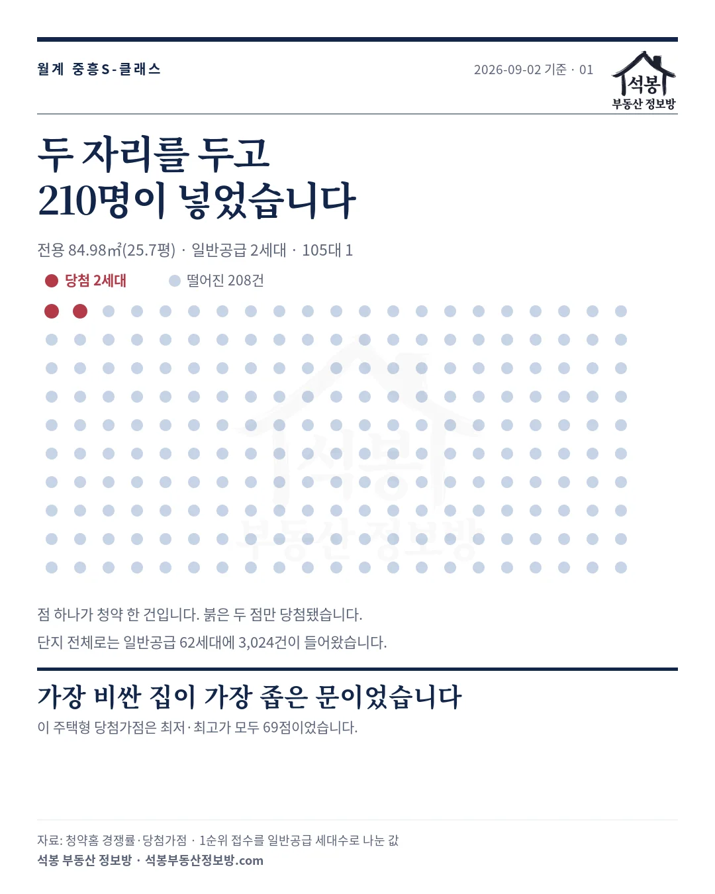
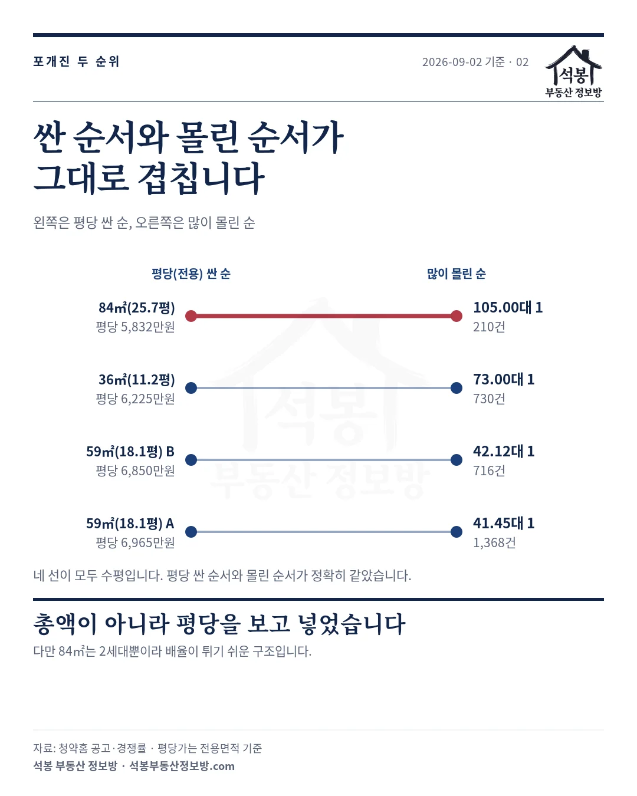
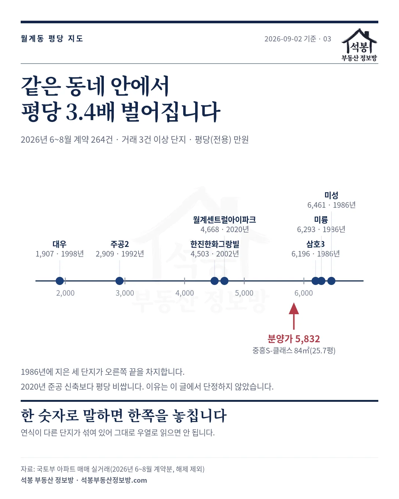

2026년 7월 27일에 이 단지 분양가를 노원 시세와 맞대 보면서 월계 중흥S-클래스 오늘 접수, 분양가는 노원 시세 어디쯤일까에 "결과는 8월 5일 발표 이후 청약홈에서 공개되며, 저희가 데이터로 다시 검증해 정리하겠습니다"라고 적었습니다. 그 약속을 지키는 글입니다.
일반공급 62세대에 3,024건이 들어왔습니다. 48.77대 1입니다. 그런데 주택형별로 보면 순서가 뜻밖입니다. 평당으로 가장 싼 집에 사람이 가장 많이 몰렸습니다.
하나. 네 개 주택형이 모두 해당지역 1순위에서 끝났습니다
먼저 결과를 그대로 펼치겠습니다. 경쟁률은 저희가 7월에 밝힌 산식 그대로 1순위 접수 건수를 일반공급 세대수로 나눈 값입니다. 2순위와 특별공급은 넣지 않았습니다.
| 주택형(전용) | 일반공급 | 분양가 | 접수 | 1순위 경쟁률 | 당첨가점 |
|---|---|---|---|---|---|
| 36.95㎡(11.2평) | 10세대 | 6억 9,590만원 | 730건 | 73.00대 1 | 59~63 |
| 59.94㎡(18.1평) B | 17세대 | 12억 4,200만원 | 716건 | 42.12대 1 | 64~69 |
| 59.97㎡(18.1평) A | 33세대 | 12억 6,350만원 | 1,368건 | 41.45대 1 | 61~69 |
| 84.98㎡(25.7평) | 2세대 | 14억 9,910만원 | 210건 | 105.00대 1 | 69~69 |
네 개 주택형 모두 해당지역 1순위에서 마감됐습니다. 기타지역과 2순위는 접수 자체가 없었습니다. 청약홈 자료에 그 칸이 비어 있는 건 미달이 아니라 차례가 오지 않았다는 뜻입니다.
총 공급은 135세대인데 그중 73세대가 특별공급이고 일반공급은 62세대였습니다. 전체 물량의 절반 이상이 신혼부부·생애최초 같은 특별공급으로 먼저 나갔다는 뜻입니다.

가입하시면 지역 시장조사 보고서(약식)를 2회 무료로 요청하실 수 있습니다.
둘. 가장 비싼 집이 아니라, 평당 가장 싼 집에 몰렸습니다
표에서 눈에 걸리는 건 84㎡(25.7평)입니다. 총액은 14억 9,910만원으로 가장 비싼데 경쟁률이 105대 1로 가장 높습니다.
같은 값을 평당(전용)으로 옮겨 보면 답이 나옵니다.
| 주택형(전용) | 평당(전용) | 경쟁률 | 순서 |
|---|---|---|---|
| 84.98㎡(25.7평) | 5,832만원 | 105.00대 1 | 가장 싸고 가장 몰렸다 |
| 36.95㎡(11.2평) | 6,225만원 | 73.00대 1 | 2위 |
| 59.94㎡(18.1평) B | 6,850만원 | 42.12대 1 | 3위 |
| 59.97㎡(18.1평) A | 6,965만원 | 41.45대 1 | 가장 비싸고 가장 덜 몰렸다 |
평당가 순서와 경쟁률 순서가 정확히 뒤집혀 있습니다. 평당 5,832만원이 105대 1이고, 6,965만원이 41대 1입니다.
물론 84㎡(25.7평)가 2세대뿐이라 경쟁률이 튀기 쉬운 구조이긴 합니다. 세대가 적으면 지원자가 조금만 몰려도 배율이 크게 오릅니다. 그래도 210명이 두 자리를 보고 넣었다는 사실은 그대로입니다.

셋. 당첨가점은 59점에서 69점 사이였습니다
가점도 같은 방향을 가리킵니다. 84㎡(25.7평)는 최저·최고·평균이 모두 69점이었습니다. 두 세대가 다 69점에서 갈렸다는 뜻입니다.
가장 낮은 문턱은 36.95㎡(11.2평)의 59점이었고, 59㎡대는 61점과 64점이었습니다. 청약가점은 84점이 만점이니, 69점이면 무주택 기간과 부양가족을 상당히 쌓은 자리입니다.
정리하면 이 단지는 가점이 높을수록 큰 평형으로, 그리고 평당 싼 쪽으로 갔습니다. 가점이 그만큼 안 되는 분들이 소형과 59㎡로 나뉘어 들어간 모양입니다.
넷. 분양가는 월계동 시세보다 44% 위였습니다
7월 편에서 저희가 던진 질문이 이것이었습니다. 이 분양가가 노원 시세 어디쯤인가. 결과가 나왔으니 다시 재 보겠습니다.
다만 7월 편의 숫자와 그대로 견주지는 마십시오. 그때는 주택형을 다 합쳐 ㎡당으로 묶어 쟀고, 이번에는 주택형별로 나눠 같은 면적대끼리 견줍니다. 재는 자가 다르면 답도 달라집니다.
기간도 다릅니다. 7월 편은 6~7월분이었고 이번은 6~8월분입니다. 그리고 실거래는 신고까지 시차가 있습니다.
7월 편이 월계동 145건으로 쟀던 그 6~7월 구간은, 지금 다시 세어 보면 225건입니다. 한 달 반 사이에 80건이 뒤늦게 들어왔습니다.
비교는 국토부 실거래 2026년 6~8월 계약분 가운데 2026년 9월 2일까지 신고된 것(해제 제외)이고, 월계동 전체와 노원구 신축(2020년 이후 준공)을 각각 대봤습니다.
그러니 8월 계약분은 아직 차오르는 중입니다. 아래 중위값도 시간이 지나면 조금씩 움직입니다.
| 면적대 | 분양가 | 월계동 전체 중위 | 노원구 신축 중위 |
|---|---|---|---|
| 84㎡대 | 14억 9,910만원 | 10억 4,000만원 (52건) +44.1% | 11억 9,000만원 (29건) +26.0% |
| 59㎡대 | 12억 5,619만원 세대 가중 | 8억 6,500만원 (67건) +45.2% | 9억 7,000만원 (23건) +29.5% |
비교 대상을 연식을 가리지 않은 월계동 전체로 두면 44~45% 위이고, 노원구 신축으로 좁히면 26~30% 위입니다. 어느 쪽으로 재든 시세보다 높은 값이었고, 그런데도 48대 1로 마감됐습니다.
59㎡대는 주택형이 둘이라 세대수로 가중해 하나로 묶었습니다. 33세대짜리와 17세대짜리를 그냥 평균 내면 실제와 어긋나기 때문입니다.
다섯. 같은 동네 안에서 평당가가 3.4배 벌어집니다
월계동을 하나의 시세로 말하기 어렵다는 점은 짚어 두는 게 좋겠습니다. 2026년 6~8월 계약분 가운데 9월 2일까지 신고된 월계동 아파트 매매는 264건인데, 거래가 3건 이상인 단지끼리만 견줘도 평당가가 3.4배 벌어집니다.
| 단지(준공) | 거래 | 중위 거래가 | 평당(전용) |
|---|---|---|---|
| 미성 (1986년) | 23건 | 9억 6,200만원 | 6,461만원 |
| 미륭 (1986년) | 11건 | 9억 8,000만원 | 6,293만원 |
| 삼호3 (1986년) | 9건 | 11억 1,000만원 | 6,196만원 |
| 월계센트럴아이파크 (2020년) | 7건 | 11억 8,000만원 | 4,668만원 |
| 한진한화그랑빌 (2002년) | 32건 | 11억 4,000만원 | 4,503만원 |
| 주공2 (1992년) | 25건 | 3억 7,000만원 | 2,909만원 |
| 대우 (1998년) | 4건 | 7억 6,100만원 | 1,907만원 |
1986년에 지은 세 단지가 평당가 상위 세 자리를 차지합니다. 2020년 준공 신축(4,668만원)보다 높습니다. 같은 동네에서 40년 된 아파트가 5년 된 아파트보다 평당 비싸게 거래되고 있다는 뜻입니다.
왜 그런지는 이 글에서 단정하지 않겠습니다. 다만 월계동 시세를 한 숫자로 말하면 반드시 한쪽을 놓친다는 점은 분명합니다. 분양가 평당 5,832만원도 이 폭 안 어딘가에 놓입니다.

남는 것
이 단지는 투기과열지구이자 조정대상지역이고 분양가상한제는 적용되지 않았습니다. 정비사업으로 짓는 단지이고 입주는 2029년 5월 예정입니다. 계약은 2026년 8월 18일부터 20일까지 이미 끝났습니다.
결과만 놓고 보면 이렇게 정리됩니다. 시세보다 26~44% 높은 값이었는데도 네 개 주택형이 모두 1순위 해당지역에서 마감됐고, 평당으로 가장 싼 주택형에 가장 많이 몰렸습니다.
서울에서 신축 분양이 드물다는 사정과, 2029년 입주까지 3년 가까이 기다린다는 조건이 그 값 안에 함께 들어 있습니다. 어느 쪽 무게가 더 컸는지는 입주 시점의 시세가 답할 것입니다.
원자료: 청약홈 입주자모집공고·경쟁률·당첨가점(월계 중흥S-클래스 리비에르, 공고 2026년 7월 16일, 발표 2026년 8월 5일)과 국토교통부 아파트 매매 실거래(2026년 6~8월 계약분 중 2026년 9월 2일까지 신고된 것, 해제 제외). 기준일 2026년 9월 2일
1순위 경쟁률은 1순위 접수 건수를 일반공급 세대수로 나눈 값이며 특별공급·2순위는 제외했습니다. 면적·평당가는 전용면적 기준이고, 59㎡대 분양가는 주택형 둘을 세대수로 가중한 값입니다
⚠️신고 시차 때문에 8월 계약분은 아직 차오르는 중이라 중위값은 이후 바뀝니다. 표본은 월계동 264건, 84㎡대 52건·59㎡대 67건, 노원 신축 29건·23건. 단지별 평당가는 거래 3건 이상만 실었고 연식이 다른 단지가 섞여 있어 그대로 우열로 읽으면 안 됩니다
편집·제작: 석봉 부동산 정보방 · 투자 권유가 아닙니다.